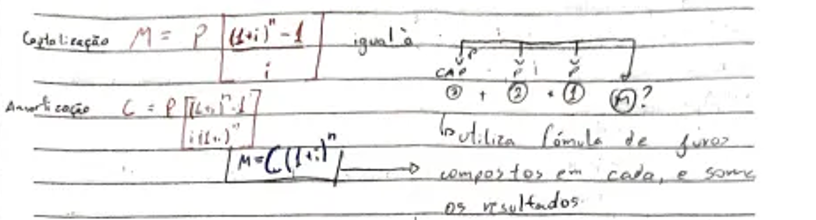

Portfólio de Matemática
Feito por João Fassina
1°Trimestre, 2° ano de Informática
Instituto Federal de Educação, Ciência e Tecnologia do Rio Grande do Sul -
Campus Erechim
Introdução ao Portfólio
O portfólio de matemática é uma forma de aperfeiçoar o conteúdo estudado
em sala de aula, pois para seu desenvolvimento, é necessário estudar o
conteúdo para conseguir entender e explicar ele, podendo trazer os
entendimentos do conteúdo, dificuldades e também pontos interessantes que
foram encontrados.
No portfólio existe três conteúdos, Anuidades, Matrizes e Determinantes.
Todas as coisas do portfólio são baseadas no caderno, as fotos do caderno
estão aqui.
Conteúdo:
- Anuidades
- Matrizes
- Determinantes
Anuidades:
As Anuidades podem ser dividas em duas fórmulas, a fórmula de
Capitalização e a de Amortização.
Uma Capitalização pode se entender como quando você deposita um valor
por parcelas, ganhando uma porcentagem em cima dos depósitos que você
realiza. Por exemplo, se eu ganho 25 reais para o almoço mais um suco,
e eu deposito estes 25 reais no banco durante trinta dias, eu vou ter
750 reais, porém neste banco, você ganha 1% de capitalização todo dia,
ou seja, um juros composto de 1% de lucro em cima do valor presente,
assim deixando você com um total de R$869,62.
Como essa magia de dinheiro infinito funciona?
Isso não é magia, é uma fórmula matemática chamada Capitalização, que
busca trazer o montante de um número de determindados depósitos
iguais.
M = P[ (1+i)n - 1 / i]
- M = Montante
- P = Parcela
- i = Taxa de Juros
- n = Tempo de Capitalização
